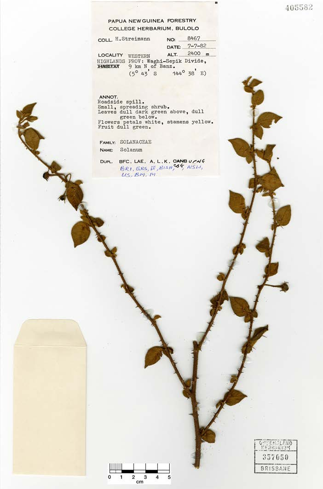
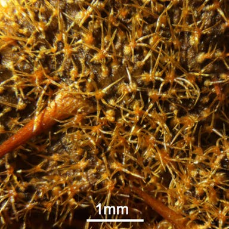

Taxonomic novelties in the Solanum ferocissimum group (Solanaceae: Solanum subg. Leptostemonum) from New Guinea
Bean, A R
Abstract
Full text
Full text is available as a scanned copy of the original print version.
Get a printable copy (PDF file) of the
complete article, or click on a page image below to browse page by page.
Links are also available for
Selected References.
Images in this article
Fig. 1 Holotype of Solanum arachnoides (Symon 13826, CANB).
Fig. 2 Stellate hairs on upper leaf surface of Solanum arachnoides (Symon 13826, CANB).

Fig. 3 Holotype of Solanum banzicum (Streimann 8467, BRI).

Fig. 4 Stellate hairs on upper leaf surface of Solanum banzicum (Streimann 8467, BRI).